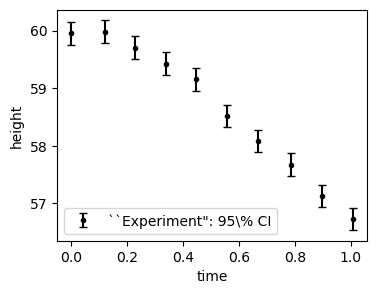
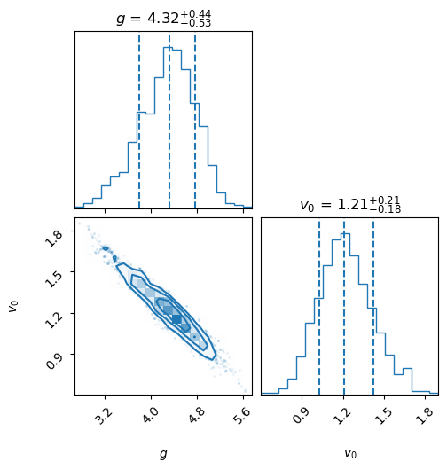
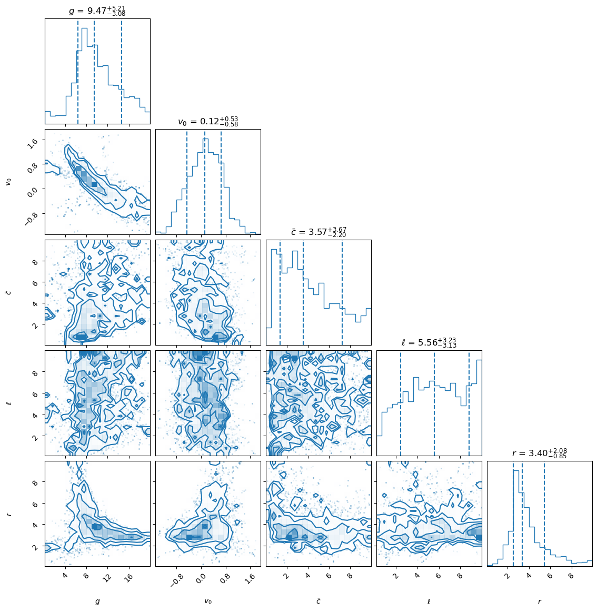

15.4. 📥 Demo: Ball-drop experiment#
This notebook has an implementation of the discrepancy model for the ball-drop experiment from the last section, simplified so that the height is the only observable that is measured.
This notebook was created by Dr. Sunil Jaiswal in July, 2025.
Theory for the truth#
Consider the drag force on the ball (sphere) for the true model to behave as
where \(v\) is magnitude of velocity \(\bf{v}\). The coefficients \(b\) and \(c\) are drag coefficients.
\(\bullet\) Equation of motion:
We have considerd the downward direction to be positive. Here \(\color{red}{m=1\, kg}\) is the mass of the sphere and \(\color{red}{g=9.8\, m/s^2}\) the acceleration due to gravity.
\(\bullet\) The equation for velocity can be written as \(m\frac{d v}{dt} = m g - b v- c v \sqrt{v^2}\). The last term is written such that it takes into account the direction of velocity in quadratic term. We need to solve the equations:
By default we consider the ball to have the initial height \(\color{red}{h_0=60\, m}\) at initial time \(\color{red}{t_0=0\,sec}\) with initial velocity \(\color{red}{v_0=0\, m/s^2}\).
Setup sampling with emcee (and, if loaded, pocomc) samplers#
import matplotlib.pyplot as plt
import emcee
import corner
#import pocomc # uncomment here when using pocomc sampler
from multiprocess import Pool
from scipy.stats import uniform
import time
import os
# ================================ emcee sampler ==================================
def emcee_sampling(min_param, max_param, log_posterior,
nburn=2000, nsteps=2000, num_walker_per_dim=8, progress=False):
"""
Function for sampling in parallel using emcee.
Parameters:
- min_param (list or array): minimum values parameters
- max_param (list or array): maximum values parameters
- log_posterior (callable): log posterior
- nburn (int): "burn-in" period to let chains stabilize
- nsteps (int): # number of MCMC steps to take after burn-in
- num_walker_per_dim (int): number of walker per dimension
- samples_save_dir (string): directory name in which the samples will be saved
- progress (boolean): toggle the progress bar
"""
if len(min_param) != len(max_param):
raise ValueError(
f"min_param and max_param must have the same length."
)
ndim = len(min_param) # number of parameters in the model
nwalkers = ndim * num_walker_per_dim # number of MCMC walkers
start_time = time.time()
print(f"Starting MCMC sampling using emcee with {nwalkers} walkers in parallel...")
# Generate starting guesses within the prior bounds
starting_guesses = min_param + (max_param - min_param) * np.random.rand(nwalkers,ndim)
# Create a pool of workers using multiprocessing
with Pool() as pool:
# Pass the pool to the sampler
sampler = emcee.EnsembleSampler(nwalkers,ndim,log_posterior,pool=pool)
# "Burn-in" period
pos, prob, state = sampler.run_mcmc(starting_guesses, nburn, progress=progress)
sampler.reset()
# Sampling period
pos, prob, state = sampler.run_mcmc(pos, nsteps, progress=progress)
# Collect samples
samples = sampler.get_chain(flat=True)
end_time = time.time()
print(f"Sampling complete. Time taken: {(end_time - start_time)/60:.2f} minutes.")
print(f"Mean acceptance fraction: {np.mean(sampler.acceptance_fraction):.3f} (in total {nwalkers*nsteps} steps)")
print(f"Samples shape: {samples.shape}")
return samples
# ================================ pocoMC sampler ==================================
def pocomc_sampling(min_param, max_param, log_posterior,
n_effective=2000, n_active=800, n_steps=None,
# n_prior=2048, n_max_steps=200,
n_total=5000, n_evidence=5000, ncores = -1
):
"""
This function is based on PocoMC package (version 1.2.1).
pocoMC is a Preconditioned Monte Carlo (PMC) sampler that uses
normalizing flows to precondition the target distribution.
Parameters:
- min_param (list or array): Minimum values parameters
- max_param (list or array): Maximum values parameters
- log_posterior (callable): Log posterior
- n_effective (int): The effective sample size maintained during the run. Default: 2000.
- n_active (int): Number of active particles. Default: 800. Must be < n_effective.
- n_steps (int): Number of MCMC steps after logP plateau. Default: None -> n_steps=n_dim.
Higher values lead to better exploration but increases computational cost.
- n_total (int): Total effectively independent samples to be collected. Default: 5000.
- n_evidence (int): Number of importance samples used to estimate evidence. Default: 5000.
If 0, the evidence is not estimated using importance sampling.
- ncores: Number of cores to use in sampling.
-1 (default): use all availaible cores
n (int): use n cores
"""
# Generating prior range for pocomc
priors = [uniform(lower, upper - lower) for lower, upper in zip(min_param, max_param)]
prior = pocomc.Prior(priors)
ndim = len(min_param) # number of parameters in the model
# --------------------------------------------------------------------------------------------
# Try to get the allowed CPU count via affinity (works on Linux/Windows)
try:
available_cores = len(os.sched_getaffinity(0))# len(psutil.Process().cpu_affinity())
except Exception:
# On systems where affinity is not available (e.g., macOS), use total CPU count
available_cores = os.cpu_count()
# Validate that ncores is an integer and at least -1
if not isinstance(ncores, int) or ncores < -1:
raise ValueError("ncores must be an integer greater than or equal to -1. Specify '-1' to use all available cores.")
if ncores == -1:
# Use all available cores
num_cores = available_cores
elif ncores > available_cores:
# Warn if more cores are requested than available and then use available cores
warnings.warn(
f"ncores ({ncores}) exceeds available cores ({available_cores}). Using available cores.",
UserWarning
)
num_cores = available_cores
else:
num_cores = ncores
# --------------------------------------------------------------------------------------------
start_time = time.time()
sampler = pocomc.Sampler(prior=prior, likelihood=log_posterior,
n_effective=n_effective, n_active=n_active, n_steps=n_steps,
# dynamic=True, n_prior=n_prior, n_max_steps=n_max_steps,
pytorch_threads=None, # use all availaible threads for training
pool=num_cores
)
print(f"Starting sampling using pocomc in {num_cores} cores...")
sampler.run(n_total=n_total,
n_evidence=n_evidence,
progress=True)
# Generating the posterior samples
# samples, weights, logl, logp = sampler.posterior() # Weighted posterior samples
samples, _, _ = sampler.posterior(resample=True) # equal weights for samples
# Generating the evidence
# logz, logz_err = sampler.evidence() # Bayesian model evidence estimate and uncertainty
# print("Log evidence: ", logz)
# print("Log evidence error: ", logz_err)
# logging.info('Writing pocoMC chains to file...')
# chain_data = {'chain': samples, 'weights': weights, 'logl': logl,
# 'logp': logp, 'logz': logz, 'logz_err': logz_err}
end_time = time.time()
print(f"Sampling complete. Time taken: {(end_time - start_time)/60:.2f} minutes.")
print(f"Samples shape: {samples.shape}")
return samples
Generate “experimental” observations for height#
import numpy as np
from scipy.integrate import odeint
def True_height(t, h0=60.0, v0=0.0,
g=9.8, m=1.0, b=0.0, c=0.4): # initial conditions
"""
Height of a falling ball with linear + quadratic air drag.
Parameters
----------
t : float or 1-D array_like
Time(s) at which to evaluate the height.
h0, v0 : float, optional
Initial height and velocity at time t = 0.
g : float, optional
Acceleration due to gravity (m s⁻²) (taken positive downward).
m : float, optional
Mass of the ball (kg).
b, c : float, optional
Linear and quadratic drag coefficients.
Returns
-------
h : 1darray
Height(s) at the requested time points (same shape as `t`).
"""
def derivatives(y, _t):
h, v = y
dhdt = -v
dvdt = g - (b*v)/m - (c*abs(v)*v)/m
return [dhdt, dvdt]
# Ensure we integrate from t0 out to the requested time(s)
t = np.atleast_1d(t)
times = np.concatenate(([t[0]], t)) # add t[0] to get solution at t=0
sol = odeint(derivatives, [h0, v0], times)
return sol[1:, 0]
np.random.seed(42) # Set a random seed for reproducibility. Change 42 -> 0 for different seeds every time.
# Generate an array of time where height are observed -->
t_obs = np.linspace(0.0, 1.0, 10)
t_noise = np.random.uniform(1e-3, 1e-2, size = t_obs.shape) # random noise added to time. helps in inversion of covariance matrix.
t_noise[0] = 0.0 # No noise for initial time
t_obs = np.round(t_obs + t_noise, decimals=4)
# Compute height of ball at these time steps -->
hexp_std = 0.1 # standard deviation of assumed gaussian noise as error of measurment
hexp_err = np.array([hexp_std]*len(t_obs)) # adding gaussian noise to observation of height
hexp_mean = np.random.normal(True_height(t_obs), hexp_err) # observed height at input times
plt.figure(figsize=(4, 3))
plt.errorbar(t_obs, hexp_mean, yerr=[1.96*hexp_err, 1.96*hexp_err],
fmt='o', markersize=3, capsize=3, color='black',
label=f'``Experiment": 95\% CI')
plt.ylabel('height')
plt.xlabel('time')
plt.legend()
plt.show()

Define physics model#
def model_height(t, g, v0=0.0, h0=60.0):
return np.atleast_1d(h0 - v0 * t - g * t**2 / 2.0 )
# def model_height(t, g, v0, h0=60.0):
# f = True_height(t, h0=60.0, v0=v0, g=g, m=1.0, b=0.0, c=0.0)
# return np.atleast_1d(f)
# model_height(t=t_obs, g = 9.8)
Define model discrepancy class#
from sklearn.preprocessing import StandardScaler
from scipy.spatial.distance import mahalanobis
class ModelDiscrepancy():
def __init__(self, t_obs, hexp_mean, hexp_err, model_height, num_model_param, log_priors, MD = False, kernel_func = None):
self.t_obs = t_obs
self.hexp_mean = hexp_mean
self.hexp_err = hexp_err
self.model_height = model_height
self.num_model_param = num_model_param
self.log_priors = log_priors
self.MD = MD
self.kernel_func = kernel_func
if self.MD:
self.log_priors_model = self.log_priors[:self.num_model_param]
self.log_priors_MDGP = self.log_priors[self.num_model_param:]
else:
self.log_priors_model = self.log_priors
# standardize experimental data ----->
self.scaler = StandardScaler()
self.hexp_mean_scaled = self.scaler.fit_transform(self.hexp_mean.reshape(-1, 1)).ravel()
self.offset = float(self.scaler.mean_[0])
self.scale = float(self.scaler.scale_[0])
self.hexp_err_scaled = self.hexp_err / self.scale
#=======================================================================
def log_likelihood(self, theta, phi=[]):
"""
Calculate the log-likelihood of a dataset given the mean and covariance matrix.
Parameters:
theta: 1D NumPy array containing model parameters.
phi: 1D NumPy array containing GP kernel hyperparameters.
Returns:
Log-likelihood of the dataset.
"""
if self.num_model_param == 1:
g = theta[0]
h = model_height(t = self.t_obs, g = g)
elif self.num_model_param == 2:
g, v0 = theta[0], theta[1]
h = self.model_height(t = self.t_obs, g = g, v0 = v0)
hmodel_scaled = (h - self.offset) / self.scale
cov_exp = np.diag(self.hexp_err_scaled**2)
if self.MD == False:
cov_total = cov_exp
else:
X = self.t_obs.reshape(-1, 1)
cov_total = self.kernel_func(X, X, *phi) + cov_exp
k = len(self.t_obs) # number of observables
md2 = mahalanobis(self.hexp_mean_scaled, hmodel_scaled, np.linalg.inv(cov_total))**2
# calculate the log-likelihood
log_likelihood_value = -0.5 * (md2 + np.log(np.linalg.det(cov_total)) + k * np.log(2.0 * np.pi) )
return log_likelihood_value
#=======================================================================
def log_posterior(self, theta_and_phi):
"""
Calculate the log posterior = sum of log priors + log likelihood.
Parameters
----------
theta_and_phi : np.ndarray (1D)
Combined array of model params (theta) and discrepancy params (phi) if MD=True.
Returns
-------
float
The log posterior value.
"""
theta_and_phi = np.atleast_1d(theta_and_phi)
if self.MD:
theta = theta_and_phi[:self.num_model_param]
phi = theta_and_phi[self.num_model_param:]
else:
theta = theta_and_phi
phi = []
# ----------------------------------------
# Calculate log-prior for model parameters
# ----------------------------------------
log_prior_val = 0.0
for i, prior_func in enumerate(self.log_priors_model):
lp = prior_func(theta[i])
if lp <= -1e5:
return -1e30
log_prior_val += lp
# ------------------------------------------------------
# If MD ==True, accumulate log-prior for phi as well
# ------------------------------------------------------
if self.MD:
for i, prior_func in enumerate(self.log_priors_MDGP):
lp = prior_func(phi[i])
if lp <= -1e5:
return -1e30
log_prior_val += lp
# ------------------------
# Calculate log-likelihood
# ------------------------
log_likelihood_val = self.log_likelihood(theta, phi)
return log_prior_val + log_likelihood_val
Define priors#
from scipy.stats import beta
# Define function for general beta priors
def log_prior_param(param, alpha_val, beta_val, param_min, param_max):
"""
Log prior for parameter based on a Beta distribution.
"""
scale = param_max - param_min # Rescaling factor
if param_min < param < param_max:
# Rescale param to the range [param_min, param_max]
param_rescaled = (param - param_min) / scale
prior = beta.pdf(param_rescaled, alpha_val, beta_val) / scale
return np.log(prior)
else:
return -np.inf
model_param_bounds = np.array([[ 0.0, 20.0 ],
[-2.0 , 2.0 ]])
# model_param_bounds = np.array([[ 0.0, 20.0 ]]) # When only model parameter is g -- That's all the change required in code
num_model_param = len(model_param_bounds)
# Define a list of log_prior functions for model parameters
log_prior_theta = [
lambda param, i=i: log_prior_param(
param, alpha_val=1.01, beta_val=1.01, # for flat priors
param_min=model_param_bounds[i][0], param_max=model_param_bounds[i][1]
)
for i in range(num_model_param)
]
Without model discrepancy#
# Instantiate class -->
MDC = ModelDiscrepancy(t_obs=t_obs, hexp_mean=hexp_mean, hexp_err=hexp_err,
model_height=model_height, num_model_param=num_model_param,
log_priors=log_prior_theta, MD = False, kernel_func = None)
from scipy import optimize
guess = model_param_bounds.mean(axis=1)
# Find Maximum likelihood value for parameters -->
nll = lambda *args: - MDC.log_likelihood(*args)
result = optimize.minimize(nll, guess, method = 'Powell')
max_lik = result['x']
print(result)
print("\nMaximum likelihood value for parameters:", max_lik,"\n")
# Find MAP values for parameters -->
nlp = lambda *args: - MDC.log_posterior(*args)
result = optimize.minimize(nlp, guess, method = 'Powell')
MAP = result['x']
print(result)
print("\nMAP values for parameters:", MAP)
message: Maximum number of function evaluations has been exceeded.
success: False
status: 1
fun: -8.556378888999681
x: [ 3.977e+00 1.354e+00]
nit: 83
direc: [[ 7.342e-03 7.656e-05]
[ 9.371e-03 -8.352e-04]]
nfev: 2000
Maximum likelihood value for parameters: [3.97682437 1.35379069]
message: Maximum number of function evaluations has been exceeded.
success: False
status: 1
fun: -4.17801963736677
x: [ 3.978e+00 1.353e+00]
nit: 83
direc: [[ 7.276e-03 1.052e-04]
[ 9.307e-03 -8.065e-04]]
nfev: 2000
MAP values for parameters: [3.97794526 1.35323281]
min_param = model_param_bounds[:,0]
max_param = model_param_bounds[:,1]
lab = [r'$g$', r'$v_0$']
Now do the sampling and plot the posteriors#
The initial values for the the numbers of burn-in and sampling steps are initially rather low (for both this section and the next), which can lead to poorly converged posteriors. After your first analysis (to the end of the notebook), return and re-run with increased values (see suggested values in the comments; note that it will take a while to run).
num_burn = 200 # 2000 is a minimum
num_steps = 200 # 2000 is a minimum
samples_WMD = emcee_sampling(min_param = min_param, max_param = max_param,
log_posterior = MDC.log_posterior,
nburn = num_burn, nsteps = num_steps, num_walker_per_dim = 8)
fig = corner.corner(samples_WMD, labels=lab, color='C0', quantiles=[0.16, 0.5, 0.84],
show_titles=True, title_kwargs={"fontsize": 12}, hist_kwargs={'density': True})
plt.show()
Starting MCMC sampling using emcee with 16 walkers in parallel...
Sampling complete. Time taken: 0.17 minutes.
Mean acceptance fraction: 0.735 (in total 3200 steps)
Samples shape: (3200, 2)

# # sampling with pocomc for consistency check --->
# n_effective_mltpl = 500
# n_active_mltpl = 150 # 0.3 x n_eff
# n_steps_mltpl = 2
# num_param = len(min_param)
# n_effective = n_effective_mltpl * num_param
# n_active = n_active_mltpl * num_param
# n_steps = n_steps_mltpl * num_param
# # print(n_effective, n_active, n_steps)
# n_total = 20000
# samples_WMD_poco = pocomc_sampling(min_param, max_param, MDC.log_posterior,
# n_effective=n_effective, n_active=n_effective, n_steps=n_steps,
# n_total=n_total, n_evidence=n_total)
# fig = corner.corner(samples_WMD_poco, labels=lab, color='C0', quantiles=[0.16, 0.5, 0.84],
# show_titles=True, title_kwargs={"fontsize": 12}, hist_kwargs={'density': True})
# plt.show()
With model discrepancy#
from sklearn.gaussian_process.kernels import DotProduct, RBF
def MD_kernel(X1, X2, cbar, l, r, s):
"""
Compute the covariance matrix using a custom kernel:
K(X1, X2) = s^2 + cbar^2 * (X1 @ X2.T)^r * exp(-||X1 - X2||^2 / (2 * l^2)).
This kernel serves as the core of the Model Discrepancy framework and should be modified
to suit specific problems.
Parameters:
- X1 (numpy.ndarray): A matrix where each row represents an input vector.
- X2 (numpy.ndarray): A matrix where each row represents an input vector.
- cbar (float): The marginal variance parameter.
- l (float): The length scale parameter for the RBF term.
- r (float): The power applied to the dot product term.
- s (float): A constant shift.
Returns:
- numpy.ndarray: A covariance matrix computed using the defined kernel.
"""
# Compute the dot product term
dot_product_term = np.dot(X1, X2.T) ** r if r > 0 else 1.0
# Compute the RBF kernel term
rbf_kernel = RBF(length_scale=l)
rbf_term = rbf_kernel(X1, X2)
# Combine terms
cov_matrix = s**2 + cbar**2 * dot_product_term * rbf_term
return cov_matrix
# ===========================================================================================
# Define hyperparameter bounds and priors
HP_bounds = np.array([[ 0.0, 10.0 ], # for cbar
[ 0.0 , 10.0 ], # for l
[ 0.0 , 10.0 ] # for r
# [ 0.0 , 10.0 ] # for s
])
# Define priors for GP hyperparmeters
log_prior_cbar = lambda param: log_prior_param(param, alpha_val=1.01, beta_val=1.01, param_min=HP_bounds[0][0], param_max=HP_bounds[0][1])
log_prior_l = lambda param: log_prior_param(param, alpha_val=1.01, beta_val=1.01, param_min=HP_bounds[1][0], param_max=HP_bounds[1][1])
log_prior_r = lambda param: log_prior_param(param, alpha_val=1.01, beta_val=1.01, param_min=HP_bounds[2][0], param_max=HP_bounds[2][1])
# log_prior_s = lambda param: log_prior_param(param, alpha_val=1.01, beta_val=1.01, param_min=HP_bounds[3][0], param_max=HP_bounds[3][1])
kernel = lambda X1, X2, cbar, l, r: MD_kernel(X1, X2, cbar, l, r, s=0)
log_prior_phi = [log_prior_cbar, log_prior_l, log_prior_r]
log_priors_thetaphi = np.concatenate([log_prior_theta, log_prior_phi])
param_bounds = np.concatenate([model_param_bounds, HP_bounds])
# Instantiate class -->
MDC = ModelDiscrepancy(t_obs=t_obs, hexp_mean=hexp_mean, hexp_err=hexp_err,
model_height=model_height, num_model_param=num_model_param,
log_priors=log_priors_thetaphi, MD = True, kernel_func = kernel)
from scipy import optimize
# Find MAP values for parameters -->
guess = param_bounds.mean(axis=1)
nlp = lambda *args: - MDC.log_posterior(*args)
result = optimize.minimize(nlp, guess, method = 'Powell')
MAP = result['x']
print(result)
print("\nMAP values for parameters:", MAP)
message: Optimization terminated successfully.
success: True
status: 0
fun: 1.130478145440673
x: [ 6.949e+00 5.352e-01 6.789e-01 6.310e+00 6.134e+00]
nit: 11
direc: [[-7.990e-01 1.626e-01 ... -6.852e-01 5.009e-01]
[ 3.777e-02 3.153e-02 ... 3.087e-01 -1.696e-01]
...
[ 0.000e+00 0.000e+00 ... 1.000e+00 0.000e+00]
[-3.678e-01 6.470e-02 ... -4.417e-01 8.013e-01]]
nfev: 583
MAP values for parameters: [6.94940459 0.53522913 0.67887983 6.30979757 6.13444589]
min_param = param_bounds[:,0]
max_param = param_bounds[:,1]
lab = [r'$g$', r'$v_0$', r'$\bar{c}$', r'$\ell$', r'$r$', r'$s$']
num_burn = 200 # 2000 is a minimum
num_steps = 200 # 2000 is a minimum
samples_MD = emcee_sampling(min_param = min_param, max_param = max_param,
log_posterior = MDC.log_posterior,
nburn = num_burn, nsteps = num_steps, num_walker_per_dim = 8)
fig = corner.corner(samples_MD, labels=lab, color='C0', quantiles=[0.16, 0.5, 0.84],
show_titles=True, title_kwargs={"fontsize": 12}, hist_kwargs={'density': True})
plt.show()
Starting MCMC sampling using emcee with 40 walkers in parallel...
Sampling complete. Time taken: 0.52 minutes.
Mean acceptance fraction: 0.357 (in total 8000 steps)
Samples shape: (8000, 5)

Things to do#
Compare the results from this notebook to the relevant figure from the section on “The ball-drop model”. Are they consistent?
Summarize the difference between results without and with model discrepancy.
Do you think you have enough samples? How can you tell? If you have time, increase the numbers and re-run to see if your observations change.
(Advanced) Repeat using the pocomc sampler and comment on the comparison with emcee.